I find where interfaces confuse people, then fix it.
I’m a master’s graduate in Information Science (UNC Chapel Hill) looking for work in UX research, interface design, or data analysis.
Four projects below, in the order I’d tell the story: I plan and run usability tests, I build information systems for real organizations, I prototype quickly with LLM APIs, and I measure whether AI output matches human judgment.
Five students, three tasks, one database where nobody could find “renal.”
The WHO Mortality Database is how researchers, policy analysts and students look up deaths by cause, country, age and year. We wrote a full test plan, then ran it: a pilot plus five participants completing three realistic data-lookup tasks while thinking aloud.
I helped write much of the plan and worked sessions as scribe and technical lead. The plan covered goals, research questions, a metrics framework (efficiency, task success, failure analysis, ease and satisfaction), moderator script, consent form, interview guide, after-task surveys, and an observation form. Before testing, a heuristic evaluation predicted the problems we later saw.
What we found
- Terminology hid the data. Kidney disease sits under “Genitourinary diseases,” and the page has no search. No one finished Task 2 correctly; one person quit and four stopped at the broad category. Three of five needed a hint.
- Comparing two countries took the longest. Task 3 averaged 5:19 and 42 clicks. People had to discover that a different chart type was the only way to select both Canada and Japan.
- Filters didn’t say what was applied. Four of five participants stumbled on the age filter in Task 1, and charts don’t label country or year, as the heuristic review had flagged.
Participants’ own suggestions: a search bar or glossary for diseases, tooltips on chart icons, and a visible label for the selected cause.
- Heuristic evaluation
- Moderated think-aloud
- Metrics design
- Observation and coding
- Excel analysis
How each participant did
Fully correct answer, partly correct, or gave up. Select a task for details.
| P1 | P2 | P3 | P4 | P5 | |
|---|---|---|---|---|---|
| Task 1 | |||||
| Task 2 | |||||
| Task 3 |

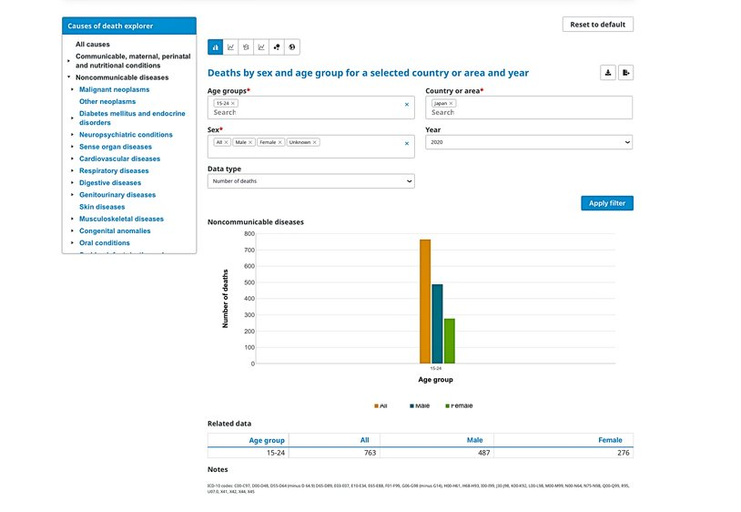

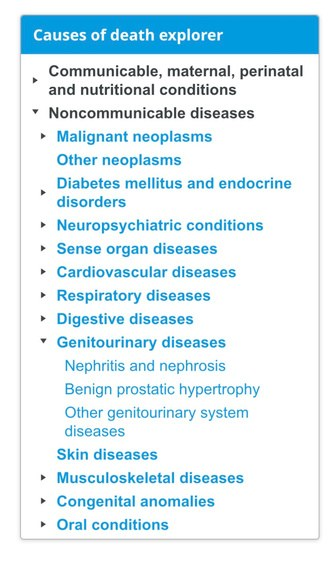

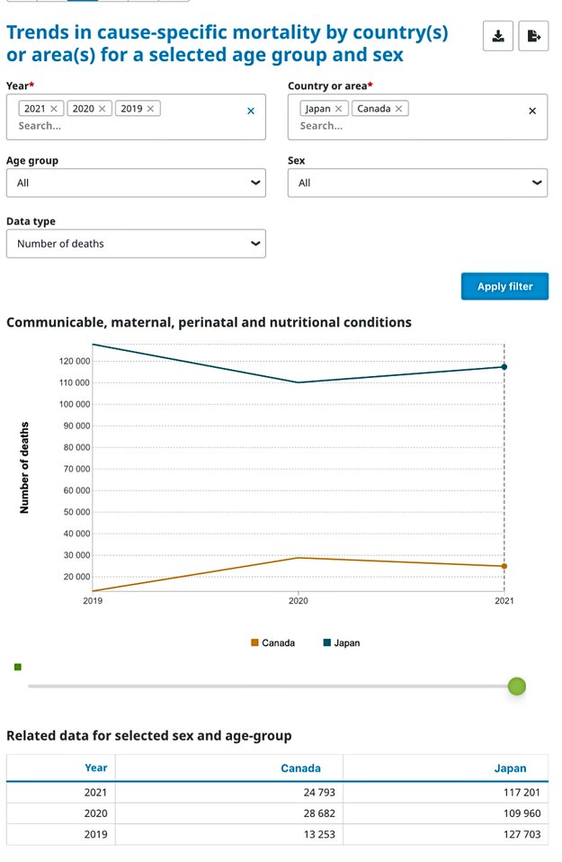
Screenshots are from the WHO Mortality Database during testing. Averages are across the five participants (pilot excluded). A participant’s answer counts as “partly correct” when they found data but chose the wrong filter, such as a broad disease group. The after-task satisfaction survey results aren’t included here.
From a list of links, many of them dead ends, to a hub people can navigate.
Carolina Advocates is a North Carolina nonprofit that puts health equity at the center of climate conversations. Its resources page was a plain list of hyperlinks, and many led nowhere.
I built the Climate, Health & Equity Resource Hub: a landing page plus five sub-pages. I designed each sub-page, found and checked the information sources, and decided which section each source belongs in, so a clinician can start from the question they have instead of scanning a list.
- Sorted sources into five themes written in the audience’s language.
- Replaced dead links with sources that exist and fit the topic.
- Gave every page the same structure so readers learn it once.
- Information architecture
- Content curation
- Page design
- Squarespace

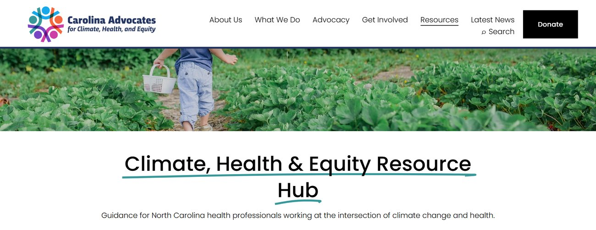

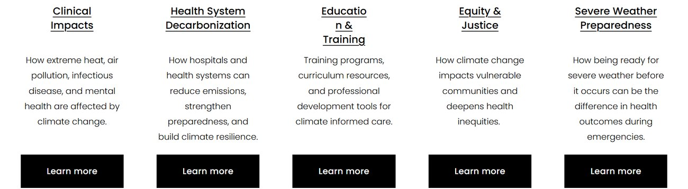

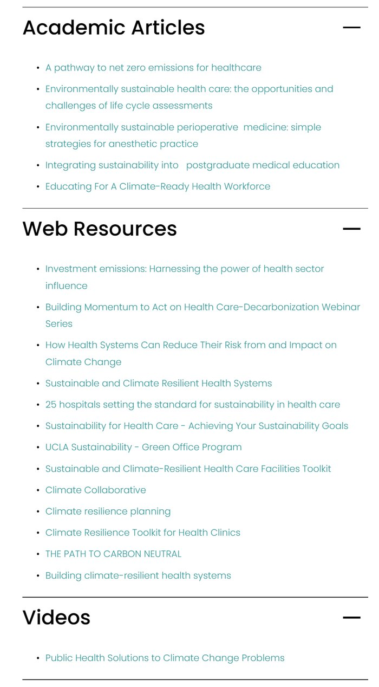

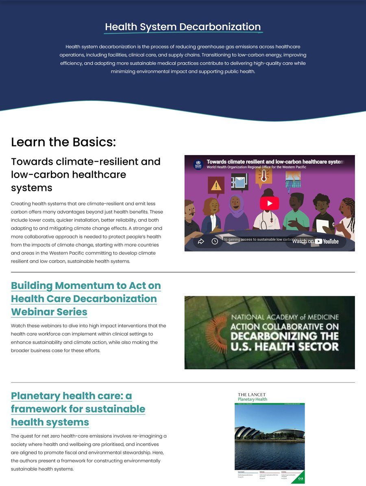
Task Tamer: an AI scheduler that plans work around what’s already on your week.
You enter a task, how long it takes, and when it’s due. Task Tamer finds time for it around your existing events and shows the result on a weekly calendar. Finishing blocks makes a pet evolve from egg to creature, a small reward loop for getting things done.
The design decision I’d point to
The language model suggests a slot, but my code decides whether it’s allowed. Each suggestion is checked against busy times, working hours, the due date, and a rule against stacking the same task on one day. If a suggestion fails, a deterministic slot finder places the block instead. The model adds flexibility; it can’t break the schedule.
- Working hours 9:00–21:00
- 15-minute buffers between blocks
- Long tasks split into sessions of 3 hours or less
- Weekdays first, weekends only as a last resort
- Everything lands before the due date
- The model also writes a short note on why it scheduled things that way
- JavaScript
- LLM API (GPT-4o mini)
- Prompt design
- Constraint checking
- Gamification

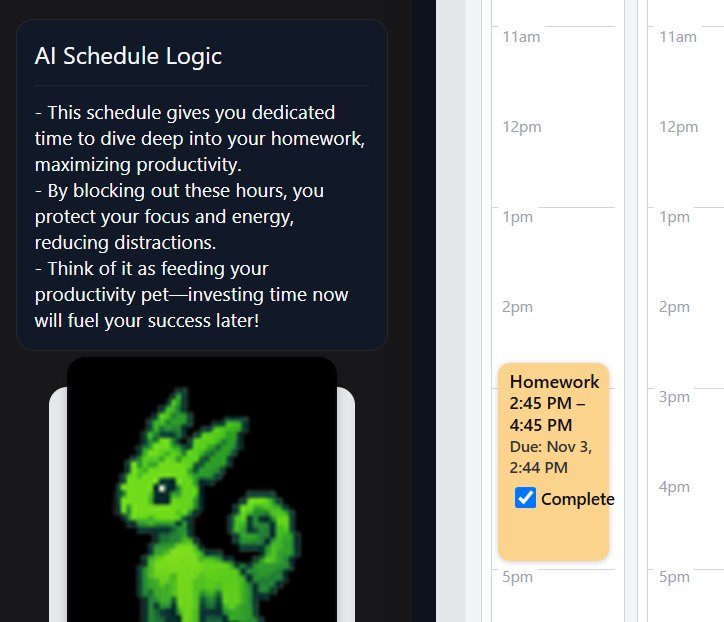

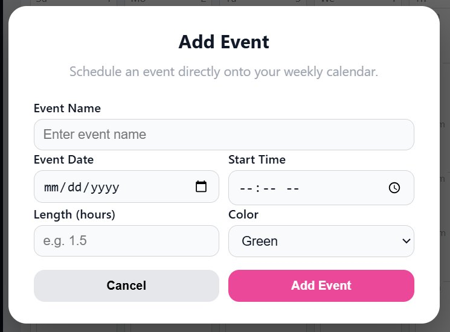

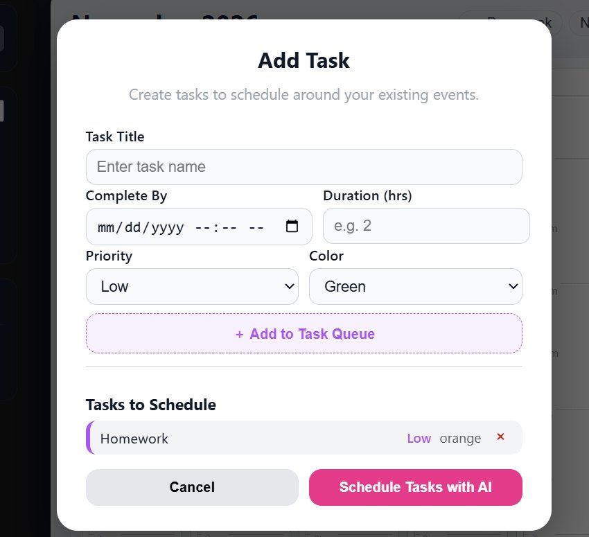

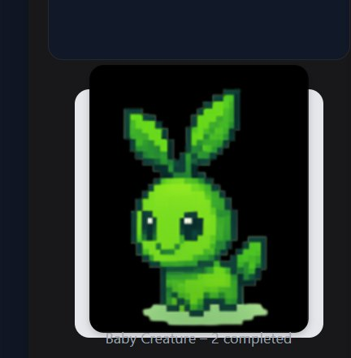
Can an LLM place and label analyst comments the way people do?
Analysts reading transcripts of recorded conversations add “operator comments” that explain what a passage means: who someone is, what a phrase hints at, what happened before. The team had a two-level taxonomy of about two dozen comment codes and a platform meant to learn it.
I built the pipeline that tests it. It takes a transcript and the taxonomy, asks an LLM where comments belong and which type each should be, then compares the answers with human-labeled ground truth. I automated alignment of transcripts, annotations and model output in Python and Excel, and designed experiments to surface inconsistencies and edge cases.
- Transcript
- Taxonomy
- LLM labels
- Align
- Compare to humans
What the metrics showed
- Accuracy hides the problem. Weighted F1 is 0.56, but macro F1 is 0.20, because the model does well on the common clarification type and fails on the rare ones.
- It over-labels clarification. It got 80% of true clarifications, but 479 of its 708 labels were clarification, and 149 of them were wrong.
- Context: right when it speaks, silent most of the time. Precision is 65%, recall only 11%. Most missed context comments were relabeled as clarification (72 of 123).
- Underlying intent: the opposite. Recall is 57%, but it assigned the label 80 times and was right 4 times (5% precision). The prompt needs a sharper line between intent and the other types.
- Acoustic elements, cover terms and speculation about unintelligible audio were never predicted.
- Python
- Excel
- LLM evaluation
- Ground-truth comparison
- Error analysis
Where the model drifted (full taxonomy)
Precision, recall and F1 by type
| Type | Precision | Recall | F1 |
|---|---|---|---|
| Clarification (414) | 0.69 | 0.80 | 0.74 |
| Reference (103) | 0.58 | 0.61 | 0.60 |
| Context (123) | 0.65 | 0.11 | 0.18 |
| Underlying intent (7) | 0.05 | 0.57 | 0.09 |
| Nature of statement (23) | 0.17 | 0.09 | 0.11 |
| Implication (10) | 0.11 | 0.10 | 0.11 |
| Acoustic, cover term, speculation (28) | 0 | 0 | 0 |
Bar chart counts across 22 transcripts, from the earlier comparison file. “Top-level family” groups the clarification subtypes together, apart from context, reference and the other types.